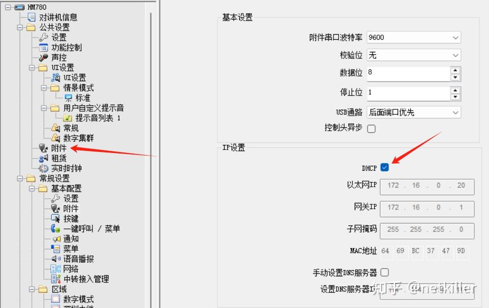
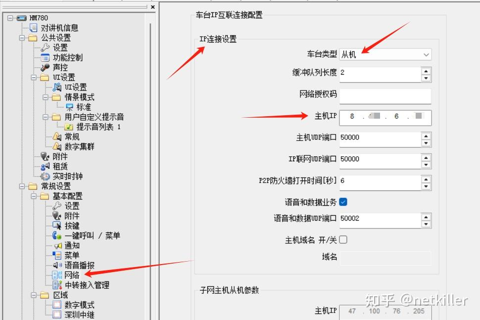
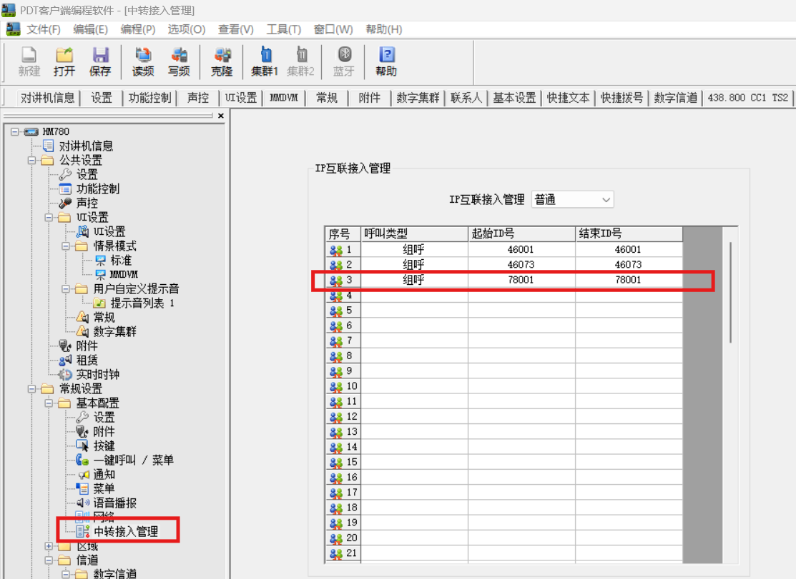
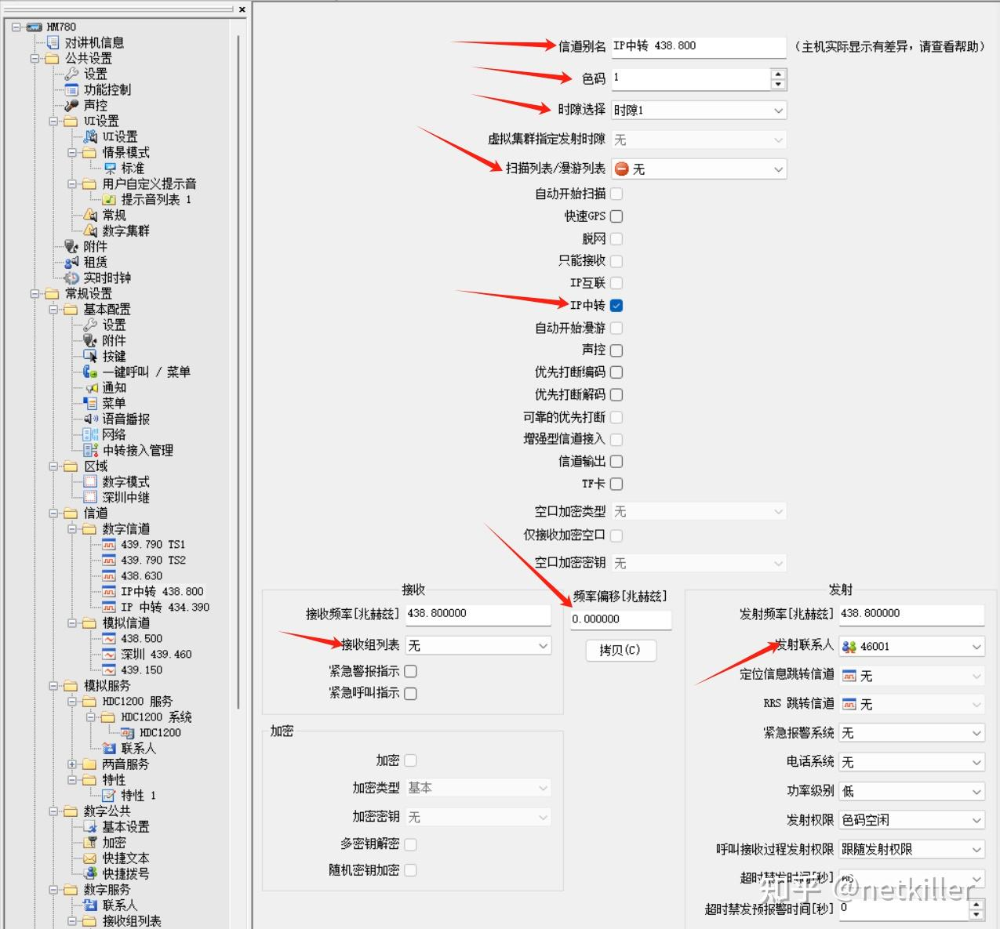

7.3. Hytera 海能达 HM780 IP中转
想加入 IP 中转的小伙伴，请私信我，这里是 BG7NYT，MMDVM：46073，深圳 DMR 439.790
过程 7.2. 海能达 HM780 IP中转 功能设置
-
第一步，设置电台的IP地址

设置电台的IP地址，建议使用DHCP，比较省事
-
第二步，从站链接主站

-
第三步，IP 互联接入管理

讲通话组添加进去
-
第四步，写频

IP转中必须使用直频，即发射和接收同一个频率，时隙你可以随意，不能有扫描/漫游列表。
色码：必须跟主机相同，否则无法收发
勾选：IP转发，不勾选，你只能听到来自IP转中的声音，你的电台不会发射。
接收组：无，联系人：目前大家用的是46001，你用全乎大家也能听到。
主机只有有一个，从机可以有多个。
IP 中转总结
- 频率：必须是直频，发射/接收相同
- 色码：必须跟主机相同，否则无法发射和接收
- 时隙：可以任意
- 接收：任何数字直频频道都能收到来自IP转中语音，按下PPT也能跟IP中转通信
- 发射：勾选 “IP中转” 车台才能发射，手台才能收到。不勾选，按下PPT可能跟IP中转通信，手台接收不到信号
- 扫描：不能开启扫描/漫游，IP中转与扫描功能互斥，只能二选一
- 兼容：摩托罗拉 P8668, P8668I 出现发射没问题，接收没声音。
HM780 发射联系人 和 接收组列表 并影响移动终端。
也就是无论手台设置什么发射联系人 和 接收组列表 HM780 都会转发
HM780 声码器设置不影响移动终端
移动终端使用什么声码器都可以，HM780都会转发语音。